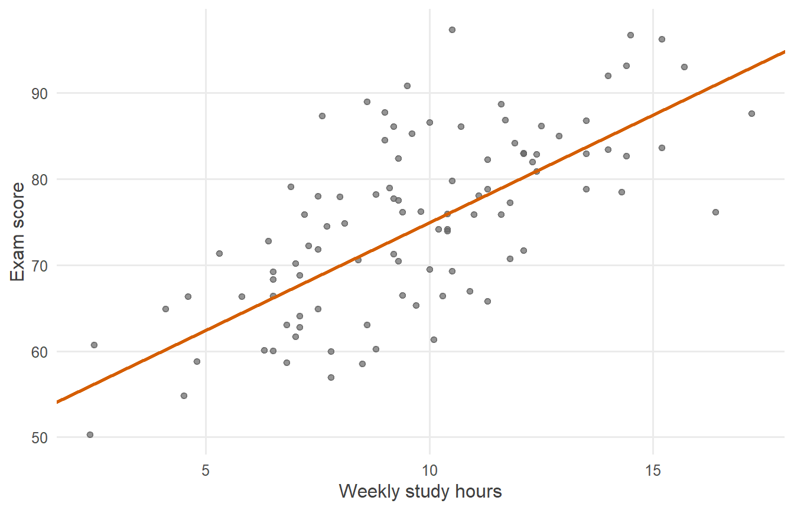
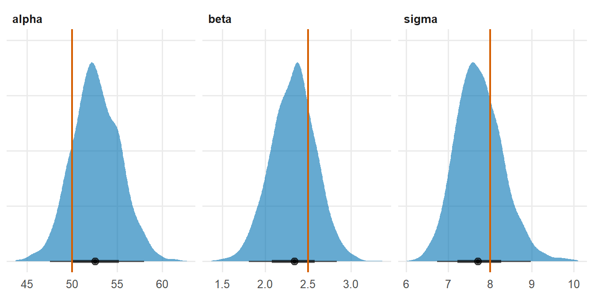
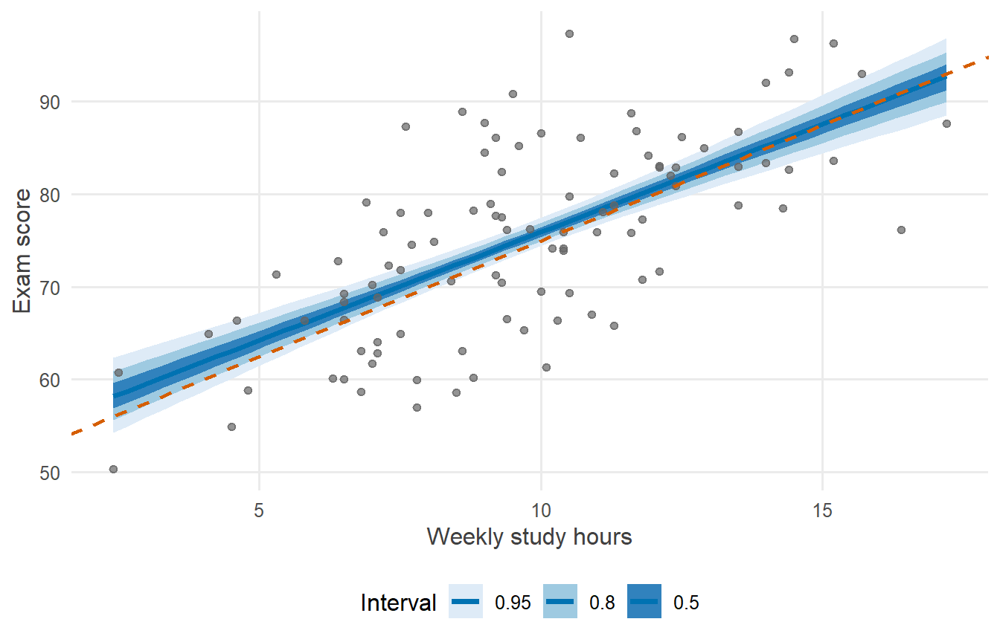
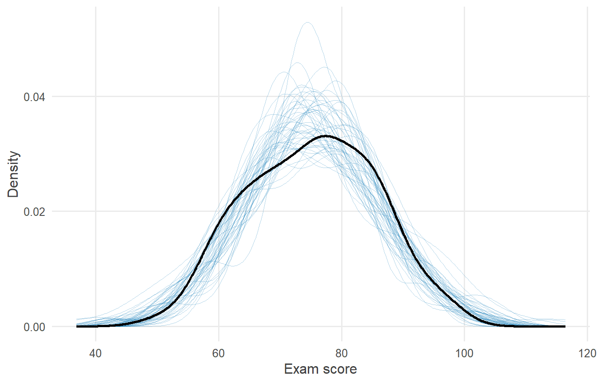
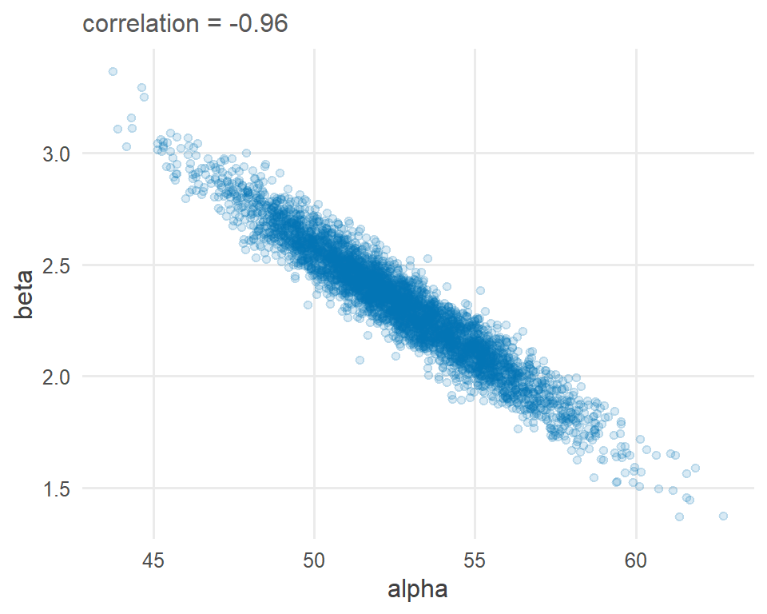
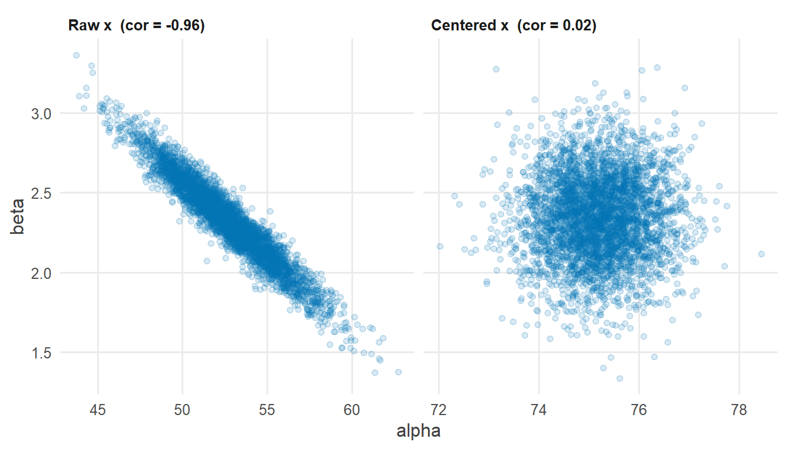
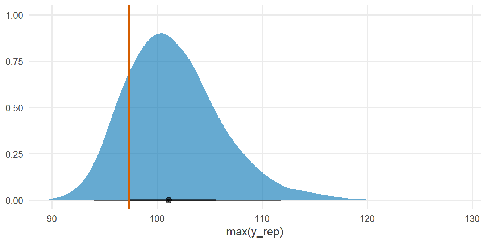

library(tidyverse)
library(cmdstanr)
library(posterior)
library(tidybayes)
source("R/theme.R")
source("R/utils.R")第 5 章 线性回归：公式逐行变代码
把一条线性回归公式逐行翻译成 Stan 程序，并讲清每一行为什么这样写。
线性回归你很可能已经在 lm() 里用过很多次。本章不追求新模型，而是专注一件事：翻译。我们把一张公式卡片逐行变成 Stan 代码，让公式里的每一个符号都在代码里找到自己的位置，再逐一回答“为什么要这样写”。
学会这一章的翻译方法，后面的 logistic 回归、层级模型、潜变量模型都只是在同一套方法上“换零件”。
1 本章要回答的问题
- 公式里的每一个符号，在 Stan 程序里落在哪一个块？应该怎样声明？
- 为什么 \(\sigma\) 必须写
<lower=0>？为什么先验必须显式写出来？ - 为什么似然用一行向量化写法？为什么
y_rep和log_lik放在generated quantities里？ - 为什么同一个 Stan 程序，只是把 \(x\) 中心化，采样效率就能大幅提高？
2 公式卡片
简单线性回归
\[ \begin{aligned} y_i &\sim \operatorname{Normal}(\mu_i,\ \sigma), \qquad i = 1, \dots, N \\ \mu_i &= \alpha + \beta\, x_i \\[4pt] \alpha &\sim \operatorname{Normal}(60,\ 20) \\ \beta &\sim \operatorname{Normal}(0,\ 5) \\ \sigma &\sim \operatorname{Exponential}(0.1) \end{aligned} \]
这张卡片可以分成三层来读：
- 似然（第一行）：每个观测 \(y_i\) 来自一个正态分布，均值是 \(\mu_i\)，标准差是 \(\sigma\)。注意，Stan 里的
normal第二个参数是标准差，不是方差。 - 线性预测（第二行）：均值 \(\mu_i\) 由截距 \(\alpha\) 和斜率 \(\beta\) 决定，随 \(x_i\) 线性变化。
- 先验（后三行）：对三个未知量各给一个分布。这里使用弱信息先验，先验怎样选、为什么这样选，留到第 8 章专门讨论。
翻译之前，先给每个符号做一次“身份登记”。决定一个符号放进哪个块，只需要问一个问题：它是已知的，还是未知的？
| 符号 | 含义 | 已知 / 未知 | 放进哪个块 | Stan 声明 |
|---|---|---|---|---|
| \(N\) | 观测数 | 已知 | data |
int<lower=0> N; |
| \(x_i\) | 预测变量 | 已知 | data |
vector[N] x; |
| \(y_i\) | 结果变量 | 已知 | data |
vector[N] y; |
| \(\alpha\) | 截距 | 未知 | parameters |
real alpha; |
| \(\beta\) | 斜率 | 未知 | parameters |
real beta; |
| \(\sigma\) | 残差标准差 | 未知，且必须为正 | parameters |
real<lower=0> sigma; |
| \(\mu_i\) | 期望值 | 由 \(\alpha, \beta\) 决定 | model 中直接写出表达式 |
alpha + beta * x |
3 模拟数据
设想一个研究情境：研究者想知道每周学习时长（hours）与期末成绩（score）之间的关系。我们先用已知的“真值”生成数据。这样做的好处是：拟合之后可以直接检查模型有没有把真值找回来。这个思路会在第 9 章系统展开。
set.seed(2026)
N <- 100
alpha_true <- 50 # expected score when hours = 0
beta_true <- 2.5 # score gain per extra weekly study hour
sigma_true <- 8 # residual standard deviation
sim_data <- tibble(
hours = round(pmax(rnorm(N, mean = 10, sd = 3), 0), 1),
score = alpha_true + beta_true * hours + rnorm(N, mean = 0, sd = sigma_true)
)
sim_data#> # A tibble: 100 × 2
#> hours score
#> <dbl> <dbl>
#> 1 11.6 88.7
#> 2 6.8 63.0
#> 3 10.4 74.2
#> 4 9.7 65.4
#> 5 8 78.0
#> 6 2.5 60.7
#> 7 7.8 57.0
#> 8 6.9 79.1
#> 9 10.3 66.4
#> 10 8.6 63.1
#> # ℹ 90 more rows模拟代码本身就是公式卡片的另一种写法：rnorm(N, 0, sigma_true) 对应 \(\operatorname{Normal}(0, \sigma)\) 的误差，alpha_true + beta_true * hours 对应 \(\mu_i\)。能写出模拟代码，说明你真正理解了这个模型是怎样生成数据的。
ggplot(sim_data, aes(x = hours, y = score)) +
geom_point() +
geom_abline(
intercept = alpha_true, slope = beta_true,
colour = f2s_colors[["truth"]], linewidth = 1
) +
labs(x = "Weekly study hours", y = "Exam score")
4 Stan 代码
完整的 Stan 程序保存在 stan/ch05_linear.stan。页面上显示的代码直接读取这个文件，与后面 cmdstanr 编译的是同一份代码。
// Chapter 5: Simple linear regression
//
// y_i ~ Normal(mu_i, sigma)
// mu_i = alpha + beta * x_i
// alpha ~ Normal(60, 20)
// beta ~ Normal(0, 5)
// sigma ~ Exponential(0.1)
data {
int<lower=0> N; // number of observations
vector[N] x; // predictor
vector[N] y; // outcome
}
parameters {
real alpha; // intercept
real beta; // slope
real<lower=0> sigma; // residual standard deviation
}
model {
// Priors
target += normal_lpdf(alpha | 60, 20);
target += normal_lpdf(beta | 0, 5);
target += exponential_lpdf(sigma | 0.1);
// Likelihood (vectorized: one line for all N observations)
target += normal_lpdf(y | alpha + beta * x, sigma);
}
generated quantities {
vector[N] mu = alpha + beta * x; // expected value of each observation
array[N] real y_rep = normal_rng(mu, sigma); // posterior predictive replicates
vector[N] log_lik; // pointwise log-likelihood (for LOO)
for (i in 1:N) {
log_lik[i] = normal_lpdf(y[i] | mu[i], sigma);
}
}下面逐块来看。
4.1 data 块：已知的量
data {
int<lower=0> N; // number of observations
vector[N] x; // predictor
vector[N] y; // outcome
}data 块里放的是 表 1 中所有“已知”的符号。三行声明分别对应 \(N\)、\(x_i\)、\(y_i\)。有两点值得留意：
N声明为int<lower=0>：观测数不可能是负数。把这个常识写进声明，Stan 会在读入数据时替你检查。x和y声明为vector[N]：长度由N决定。如果 R 端传进来的x长度不是N，Stan 会立即报错，而不是悄悄算出一个错误结果。
4.2 parameters 块：未知的量
parameters {
real alpha; // intercept
real beta; // slope
real<lower=0> sigma; // residual standard deviation
}parameters 块里放的是所有“未知”的符号，也就是我们希望从数据中学习的量。采样器要探索的，正是这三个数构成的三维空间。
\(\sigma\) 的声明多了 <lower=0>，原因见 小节 7.2。
4.3 model 块：先验 + 似然
model {
// Priors
target += normal_lpdf(alpha | 60, 20);
target += normal_lpdf(beta | 0, 5);
target += exponential_lpdf(sigma | 0.1);
// Likelihood (vectorized: one line for all N observations)
target += normal_lpdf(y | alpha + beta * x, sigma);
}把它和公式卡片并排看，几乎是逐行对应的：
| 公式卡片 | Stan 代码 |
|---|---|
| \(\alpha \sim \operatorname{Normal}(60, 20)\) | target += normal_lpdf(alpha | 60, 20); |
| \(\beta \sim \operatorname{Normal}(0, 5)\) | target += normal_lpdf(beta | 0, 5); |
| \(\sigma \sim \operatorname{Exponential}(0.1)\) | target += exponential_lpdf(sigma | 0.1); |
| \(y_i \sim \operatorname{Normal}(\alpha + \beta x_i,\ \sigma)\) | target += normal_lpdf(y | alpha + beta * x, sigma); |
target += ...lpdf(...) 的含义是：把这一项的对数概率密度累加到模型的总对数密度 target 上。它和 y ~ normal(...) 的关系，第 4 章已经详细讨论过。本系列统一采用 target += 写法，因为它把“Stan 到底在计算什么”明明白白地写了出来。
注意 _lpdf 函数中，第一个参数后面用的是竖线 | 而不是逗号。这是在模仿条件概率的记号：\(p(y \mid \mu, \sigma)\)。
4.4 generated quantities 块：每次抽样之后的“副产品”
generated quantities {
vector[N] mu = alpha + beta * x; // expected value of each observation
array[N] real y_rep = normal_rng(mu, sigma); // posterior predictive replicates
vector[N] log_lik; // pointwise log-likelihood (for LOO)
for (i in 1:N) {
log_lik[i] = normal_lpdf(y[i] | mu[i], sigma);
}
}这个块不参与推断，只是利用每一次抽到的参数值，额外计算一些我们关心的量：
mu：每个观测的期望值 \(\mu_i\)；y_rep：用当前参数“重新生成”一份数据，用于后验预测检查；log_lik：每个观测的对数似然，供后续用 LOO 做模型比较。
为什么把它们放在这里而不是 model 块，见 小节 7.5。
5 R 端运行
R 端只有三步：编译模型、准备数据、采样。
mod_linear <- cmdstan_model("stan/ch05_linear.stan")stan_data <- list(
N = nrow(sim_data),
x = sim_data$hours,
y = sim_data$score
)stan_data 的名字必须与 data 块中的变量名逐一对应：N、x、y，一个不多，一个不少。R 数据框里的列叫 hours 和 score，在这一步被“翻译”成 Stan 程序里的 x 和 y。
fit_linear <- mod_linear$sample(
data = stan_data,
seed = 2026,
chains = 4,
parallel_chains = 4,
iter_warmup = 1000,
iter_sampling = 1000,
refresh = 0
)#> Running MCMC with 4 parallel chains...
#>
#> Chain 1 finished in 0.2 seconds.
#> Chain 2 finished in 0.2 seconds.
#> Chain 3 finished in 0.2 seconds.
#> Chain 4 finished in 0.2 seconds.
#>
#> All 4 chains finished successfully.
#> Mean chain execution time: 0.2 seconds.
#> Total execution time: 0.3 seconds.采样完成后，先快速看一眼诊断信息：
fit_linear$diagnostic_summary()#> $num_divergent
#> [1] 0 0 0 0
#>
#> $num_max_treedepth
#> [1] 0 0 0 0
#>
#> $ebfmi
#> [1] 1.0718763 0.8737265 1.0490801 0.9959896四条链都没有发散转移（num_divergent 全为 0），也没有触及最大树深。这些诊断指标的具体含义，第 6 章会逐一解释。
6 后验整理与可视化
6.1 参数汇总
fit_linear$summary(c("alpha", "beta", "sigma"))#> # A tibble: 3 × 10
#> variable mean median sd mad q5 q95 rhat ess_bulk ess_tail
#> <chr> <dbl> <dbl> <dbl> <dbl> <dbl> <dbl> <dbl> <dbl> <dbl>
#> 1 alpha 52.6 52.5 2.66 2.66 48.4 57.1 1.01 1310. 1424.
#> 2 beta 2.33 2.34 0.262 0.260 1.89 2.75 1.01 1198. 1431.
#> 3 sigma 7.75 7.71 0.569 0.560 6.89 8.74 1.00 1835. 1891.把后验汇总和真值放在一起比较：
truth <- tibble(
variable = c("alpha", "beta", "sigma"),
true = c(alpha_true, beta_true, sigma_true)
)
fit_linear |>
summarise_draws(mean, ~ quantile(.x, probs = c(0.05, 0.95))) |>
filter(variable %in% truth$variable) |>
left_join(truth, by = "variable") |>
mutate(covered = true >= `5%` & true <= `95%`) |>
knitr::kable(digits = 2)| variable | mean | 5% | 95% | true | covered |
|---|---|---|---|---|---|
| alpha | 52.65 | 48.39 | 57.12 | 50.0 | TRUE |
| beta | 2.33 | 1.89 | 2.75 | 2.5 | TRUE |
| sigma | 7.75 | 6.89 | 8.74 | 8.0 | TRUE |
三个真值都落在各自的 90% 可信区间内，模型成功找回了生成数据的参数。
顺便和 lm() 对照一下：
coef(lm(score ~ hours, data = sim_data))#> (Intercept) hours
#> 52.43802 2.34888两者的点估计非常接近。这在意料之中：数据量充足、先验较弱时，贝叶斯后验均值会接近最小二乘估计。区别在于，Stan 给出的是完整的后验分布，并且模型的每一个假设都写在代码里，可以被检查、被修改。
6.2 后验分布与真值
draws_long <- fit_linear |>
gather_draws(alpha, beta, sigma)
ggplot(draws_long, aes(x = .value)) +
stat_halfeye(fill = f2s_colors[["post"]], alpha = 0.6, normalize = "panels") +
geom_vline(
data = truth |> rename(.variable = variable),
aes(xintercept = true),
colour = f2s_colors[["truth"]], linewidth = 0.8
) +
facet_wrap(~ .variable, scales = "free") +
labs(x = NULL, y = NULL) +
theme(axis.text.y = element_blank())
6.3 回归线及其不确定性
每一组后验抽样 \((\alpha^{(s)}, \beta^{(s)})\) 都对应一条回归线。把所有抽样的回归线汇总起来，就得到回归线的不确定性带。
hours_grid <- tibble(
hours = seq(min(sim_data$hours), max(sim_data$hours), length.out = 50)
)
line_draws <- fit_linear |>
spread_draws(alpha, beta) |>
cross_join(hours_grid) |>
mutate(mu = alpha + beta * hours)
ggplot(line_draws, aes(x = hours, y = mu)) +
stat_lineribbon(.width = c(0.5, 0.8, 0.95), colour = f2s_colors[["post"]]) +
scale_fill_brewer(palette = "Blues") +
geom_point(data = sim_data, aes(y = score)) +
geom_abline(
intercept = alpha_true, slope = beta_true,
colour = f2s_colors[["truth"]], linewidth = 0.8, linetype = "dashed"
) +
labs(x = "Weekly study hours", y = "Exam score", fill = "Interval")
这张图里的计算完全在 R 端完成：spread_draws() 取出 \(\alpha\) 和 \(\beta\) 的抽样，cross_join() 把每组抽样与 50 个 hours 取值配对，mutate() 按公式 \(\mu = \alpha + \beta x\) 计算。公式卡片的第二行，在这里又被“翻译”了一次。
6.4 后验预测检查
y_rep 是模型根据后验“重新生成”的数据。如果模型合理，重新生成的数据应该和真实数据长得差不多。
yrep_draws <- fit_linear |>
spread_draws(y_rep[i], ndraws = 50, seed = 2026)
ggplot() +
geom_density(
data = yrep_draws,
aes(x = y_rep, group = .draw),
colour = scales::alpha(f2s_colors[["post"]], 0.3), linewidth = 0.3
) +
geom_density(
data = sim_data,
aes(x = score),
colour = "black", linewidth = 1
) +
labs(x = "Exam score", y = "Density")
观测数据的密度曲线（黑色）落在 y_rep 曲线簇（浅蓝色）之中，说明模型能够生成与观测相似的数据。后验预测检查的更多用法，可以参考 Gabry 等 (2019)。
7 为什么这样写
7.1 为什么数据和参数要分开声明？
贝叶斯推断的核心是以已知为条件，推断未知：
\[ p(\alpha, \beta, \sigma \mid y, x) \propto p(y \mid x, \alpha, \beta, \sigma)\; p(\alpha, \beta, \sigma) \]
竖线左边是未知的参数，右边是已知的数据。Stan 用 data 和 parameters 两个块把这条竖线“画”在了代码里：
data中的量在采样开始前读入一次，之后保持不变；parameters中的量是采样器在每一步都要更新、要计算梯度的对象。
这种区分不只是形式上的整洁。它让 Stan 知道哪些量需要求导、哪些不需要；也让读代码的人一眼看出模型对哪些量做了推断。
7.2 为什么 \(\sigma\) 必须写 <lower=0>？
标准差不可能是负数。如果只写 real sigma;，会发生两件事：
- 初值可能非法。Stan 默认在无约束空间的 \((-2, 2)\) 区间内随机抽取初值，\(\sigma\) 有一半机会从负数起步。此时
exponential_lpdf和normal_lpdf都无法计算，你会看到一连串Rejecting initial value和Random variable is -1, but must be nonnegative!之类的信息。 - 采样中可能撞墙。即使初值合法，采样器在探索时也可能提议一个负的 \(\sigma\)。这个提议会被拒绝，浪费计算；当后验靠近 0 时，这种情况会更频繁，链也更容易卡在边界附近。
写上 <lower=0> 之后，Stan 在内部对 \(\sigma\) 做变换 \(\sigma = \exp(\sigma_{\text{raw}})\)，让采样器在整条实数轴上自由移动，而 \(\sigma\) 永远为正。这个变换以及它带来的雅可比调整，Stan 都会自动处理。第 3 章会专门讲约束与变换的细节。
一句话概括：约束写在声明里，是在告诉 Stan 参数生活在什么空间；不写，采样器就只能靠撞墙来发现边界。
7.3 为什么先验要显式写出来？
如果 model 块里不写任何先验，Stan 并不会报错。它相当于给每个参数一个在其取值范围上均匀的、非正常的先验：\(\alpha\) 和 \(\beta\) 在整条实数轴上均匀，\(\sigma\) 在 \((0, \infty)\) 上均匀。
在本章的数据量下，写不写先验对结果影响不大。但显式写出来有三个理由：
7.4 为什么似然要向量化？
似然也可以用循环来写，结果完全相同：
for (i in 1:N) {
target += normal_lpdf(y[i] | alpha + beta * x[i], sigma);
}本系列优先用向量化写法：
target += normal_lpdf(y | alpha + beta * x, sigma);理由有两个：
- 与公式同构。公式卡片里是一行，代码里也是一行。读者不需要在循环里“拆解”索引，就能看出它就是 \(y \sim \operatorname{Normal}(\alpha + \beta x, \sigma)\)。
- 计算更快。Stan 用自动微分计算梯度。向量化的
normal_lpdf把 \(N\) 个观测作为一个整体处理，共享的部分（比如 \(\log \sigma\)）只算一次，梯度计算也更紧凑。观测数越多，差别越明显。
当然，循环并不是错误写法。在某些模型里（比如后面要讲的混合模型），每个观测的计算结构不同，循环反而更清楚。
7.5 为什么 y_rep 和 log_lik 放在 generated quantities？
generated quantities 块有三个特点：
- 在每次抽样之后执行一次，而不是在采样器的每个积分步都执行。
model块在每次迭代中可能被计算几十次（每个跳步都要计算对数密度和梯度），generated quantities只算一次。 - 不需要求导。这里的计算不会影响后验，所以不参与自动微分，代价很小。
- 允许使用随机数生成函数。
normal_rng()这类_rng函数只能出现在transformed data和generated quantities中，在model块中使用会导致编译错误。
y_rep 和 log_lik 都是“给定参数之后的衍生量”，不参与推断，放在这里既正确又高效。
7.6 为什么中心化 \(x\) 会让采样更顺？
先看一个现象。把 \(\alpha\) 和 \(\beta\) 的后验抽样画成散点图：
draws_raw <- fit_linear |>
spread_draws(alpha, beta)
cor_raw <- cor(draws_raw$alpha, draws_raw$beta)
ggplot(draws_raw, aes(x = alpha, y = beta)) +
geom_point(alpha = 0.15, colour = f2s_colors[["post"]]) +
labs(x = "alpha", y = "beta", subtitle = sprintf("correlation = %.2f", cor_raw))
\(\alpha\) 和 \(\beta\) 的相关系数高达 -0.96。原因在于截距的含义：\(\alpha\) 是 \(x = 0\) 时的期望成绩，而数据里的 hours 集中在 9.7 小时左右，离 0 很远。斜率稍微变陡一点，截距就必须相应降低，回归线才能继续穿过数据的中心。两个参数就这样被“绑”在了一起。
对采样器来说，这样一条狭长倾斜的脊是难走的地形：沿着脊的方向可以走很远，垂直于脊的方向却一步就会走出去。采样器只能用很小的步子小心前进，有效样本量随之下降。
现在把 \(x\) 中心化，即 \(x_i^{c} = x_i - \bar{x}\)。Stan 程序一行都不用改，只换喂给它的数据：
stan_data_c <- list(
N = nrow(sim_data),
x = sim_data$hours - mean(sim_data$hours),
y = sim_data$score
)
fit_centered <- mod_linear$sample(
data = stan_data_c,
seed = 2026,
chains = 4,
parallel_chains = 4,
refresh = 0
)#> Running MCMC with 4 parallel chains...
#>
#> Chain 1 finished in 0.2 seconds.
#> Chain 2 finished in 0.2 seconds.
#> Chain 3 finished in 0.2 seconds.
#> Chain 4 finished in 0.2 seconds.
#>
#> All 4 chains finished successfully.
#> Mean chain execution time: 0.2 seconds.
#> Total execution time: 0.4 seconds.draws_c <- fit_centered |>
spread_draws(alpha, beta)
cor_c <- cor(draws_c$alpha, draws_c$beta)
bind_rows(
draws_raw |> mutate(version = sprintf("Raw x (cor = %.2f)", cor_raw)),
draws_c |> mutate(version = sprintf("Centered x (cor = %.2f)", cor_c))
) |>
mutate(version = fct_inorder(version)) |>
ggplot(aes(x = alpha, y = beta)) +
geom_point(alpha = 0.15, colour = f2s_colors[["post"]]) +
facet_wrap(~ version, scales = "free_x") +
labs(x = "alpha", y = "beta")
ess_vars <- c("alpha", "beta")
bind_rows(
fit_linear$summary(ess_vars, "ess_bulk", "ess_tail") |>
mutate(version = "Raw x"),
fit_centered$summary(ess_vars, "ess_bulk", "ess_tail") |>
mutate(version = "Centered x")
) |>
relocate(version) |>
knitr::kable(digits = 0)| version | variable | ess_bulk | ess_tail |
|---|---|---|---|
| Raw x | alpha | 1310 | 1424 |
| Raw x | beta | 1198 | 1431 |
| Centered x | alpha | 3695 | 2782 |
| Centered x | beta | 3970 | 2561 |
中心化之后，相关系数从 -0.96 降到 0.02，同样 4000 次抽样带来的有效样本量明显增加。
还要注意，中心化之后 \(\alpha\) 的含义变了：它现在是学习时长处于平均水平时的期望成绩，这往往比“学习时长为 0 时的成绩”更有解释价值。如果仍然需要原尺度的截距，可以由后验抽样直接换算：
\[ \alpha_{\text{raw}} = \alpha_{c} - \beta\, \bar{x} \]
draws_c |>
mutate(alpha_raw = alpha - beta * mean(sim_data$hours)) |>
summarise_draws() |>
filter(variable == "alpha_raw") |>
select(variable, mean, q5, q95)#> # A tibble: 1 × 4
#> variable mean q5 q95
#> <chr> <dbl> <dbl> <dbl>
#> 1 alpha_raw 52.4 48.1 56.7换算回来的结果与 表 2 中原始尺度的截距一致。同一个模型，换一种参数化，推断结论不变，但采样器的工作轻松了很多。这正是第 12 章“非中心化”背后的核心思想：我们可以通过改写，构造一个 HMC 更容易行走的后验几何。
8 常见错误
| 错误写法 | 后果 | 正确写法 |
|---|---|---|
normal_lpdf(y, mu, sigma) |
编译错误：_lpdf 函数要求第一个参数后使用竖线 |
normal_lpdf(y | mu, sigma) |
把方差传给 normal() |
能运行，但尺度错误，\(\sigma\) 的估计含义完全不同 | normal 的第二个参数是标准差 |
real sigma;（漏写约束） |
初值被拒绝、采样效率下降，严重时无法初始化 | real<lower=0> sigma; |
array[N] real x; 然后写 beta * x |
编译错误：array 不支持算术运算 |
需要做向量运算时，声明为 vector[N] x; |
在 model 块中调用 normal_rng() |
编译错误：随机数函数只能用于 transformed data 和 generated quantities |
把 _rng 调用移到 generated quantities |
R 端写成 list(n = 100, ...) |
运行时报错：Missing input data for the following data variables: N. |
列表名与 data 块变量名逐一对应，大小写敏感 |
9 练习
练习 1 先验有多大影响？
把 \(\beta\) 的先验从 \(\operatorname{Normal}(0, 5)\) 改成 \(\operatorname{Normal}(0, 100)\)，重新运行模型。\(\beta\) 的后验均值变化了多少？为什么？
提示参考答案
后验均值几乎不变，通常只在小数点后第二位有差别。原因是本章有 100 个观测，似然提供的信息远多于先验，后验主要由数据决定。
但这个结论依赖于数据量。如果只有 5 个观测，先验的影响就会明显得多。第 8 章会通过先验预测检查，看清先验在数据尺度上到底意味着什么。
练习 2 在 Stan 内部做中心化
本章在 R 端把 hours 中心化之后再传给 Stan。请改写 Stan 程序，让它接收原始的 x，在 transformed data 块中完成中心化，并在 generated quantities 中输出原尺度的截距。
提示参考答案
参考写法保存在 stan/ch05_ex2_center_inside.stan：
// Chapter 5, Exercise 2: center the predictor inside Stan
//
// y_i ~ Normal(alpha_c + beta * (x_i - mean(x)), sigma)
// alpha = alpha_c - beta * mean(x) (intercept on the original scale)
data {
int<lower=0> N; // number of observations
vector[N] x; // predictor, original scale
vector[N] y; // outcome
}
transformed data {
real x_mean = mean(x); // computed once, before sampling
vector[N] x_c = x - x_mean; // centered predictor
}
parameters {
real alpha_c; // expected y at the mean of x
real beta; // slope (unchanged by centering)
real<lower=0> sigma; // residual standard deviation
}
model {
// Priors
target += normal_lpdf(alpha_c | 60, 20);
target += normal_lpdf(beta | 0, 5);
target += exponential_lpdf(sigma | 0.1);
// Likelihood
target += normal_lpdf(y | alpha_c + beta * x_c, sigma);
}
generated quantities {
real alpha = alpha_c - beta * x_mean; // expected y when x = 0
}transformed data 块只在采样开始前执行一次，适合放这种“只依赖数据”的预处理。这样做的好处是：R 端直接传原始数据，中心化的细节写在模型文件里，换一份数据也不会忘记。
mod_ex2 <- cmdstan_model("stan/ch05_ex2_center_inside.stan")
fit_ex2 <- mod_ex2$sample(
data = stan_data, seed = 2026, chains = 4, parallel_chains = 4, refresh = 0
)#> Running MCMC with 4 parallel chains...
#>
#> Chain 1 finished in 0.0 seconds.
#> Chain 2 finished in 0.0 seconds.
#> Chain 3 finished in 0.0 seconds.
#> Chain 4 finished in 0.0 seconds.
#>
#> All 4 chains finished successfully.
#> Mean chain execution time: 0.0 seconds.
#> Total execution time: 0.3 seconds.fit_ex2$summary(c("alpha_c", "beta", "sigma", "alpha"))#> # A tibble: 4 × 10
#> variable mean median sd mad q5 q95 rhat ess_bulk ess_tail
#> <chr> <dbl> <dbl> <dbl> <dbl> <dbl> <dbl> <dbl> <dbl> <dbl>
#> 1 alpha_c 75.2 75.2 0.771 0.751 73.9 76.5 1.00 3917. 2560.
#> 2 beta 2.34 2.34 0.266 0.265 1.90 2.77 1.00 4648. 3072.
#> 3 sigma 7.77 7.74 0.556 0.545 6.91 8.71 1.000 3517. 2725.
#> 4 alpha 52.5 52.4 2.70 2.69 48.0 56.9 1.00 4687. 2952.alpha 与原始尺度拟合的截距一致，alpha_c 与中心化拟合的截距一致。
练习 3 用最大值做后验预测检查
密度曲线看的是整体形状。请用 y_rep 计算每一次抽样中模拟数据的最大值，再与观测数据的最大值比较。观测最大值在模拟分布中处于什么位置？
提示参考答案
yrep_max <- fit_linear |>
spread_draws(y_rep[i]) |>
group_by(.draw) |>
summarise(max_rep = max(y_rep))
obs_max <- max(sim_data$score)
ggplot(yrep_max, aes(x = max_rep)) +
stat_halfeye(fill = f2s_colors[["post"]], alpha = 0.6) +
geom_vline(xintercept = obs_max, colour = f2s_colors[["truth"]], linewidth = 0.8) +
labs(x = "max(y_rep)", y = NULL)
mean(yrep_max$max_rep >= obs_max)#> [1] 0.825
最后一行计算的是模拟最大值不小于观测最大值的比例，即这个统计量的后验预测 \(p\) 值。只要它不是极端地接近 0 或 1，就说明模型能够再现数据的最大值。如果这个比例接近 0，说明观测数据中有模型“想不到”的极端值，这往往提示需要更厚尾的似然（比如 Student-t）。
练习 4 两个预测变量
在模拟数据中加入每晚睡眠时长 sleep，真值设为 \(\beta_{\text{sleep}} = 1.5\)。请用设计矩阵 \(X\) 和系数向量 \(\beta\) 改写模型，使它可以容纳任意 \(K\) 个预测变量。
提示参考答案
公式写成矩阵形式：
\[ y \sim \operatorname{Normal}(\alpha + X\beta,\ \sigma) \]
参考写法保存在 stan/ch05_ex4_multiple.stan：
// Chapter 5, Exercise 4: linear regression with K predictors
//
// y ~ Normal(alpha + X * beta, sigma)
// X is an N x K design matrix, beta is a K-vector
data {
int<lower=0> N; // number of observations
int<lower=1> K; // number of predictors
matrix[N, K] X; // design matrix (one column per predictor)
vector[N] y; // outcome
}
parameters {
real alpha; // intercept
vector[K] beta; // slopes
real<lower=0> sigma; // residual standard deviation
}
model {
// Priors (vectorized over the K slopes)
target += normal_lpdf(alpha | 60, 20);
target += normal_lpdf(beta | 0, 5);
target += exponential_lpdf(sigma | 0.1);
// Likelihood: matrix-vector product replaces beta_1 * x_1 + ... + beta_K * x_K
target += normal_lpdf(y | alpha + X * beta, sigma);
}R 端手工构造设计矩阵，列的顺序就是 beta[1]、beta[2] 的顺序。这里顺便把两列都做了中心化：
set.seed(2027) # a different seed, so sleep is independent of hours
sim_data2 <- sim_data |>
mutate(
sleep = round(rnorm(n(), mean = 7, sd = 1), 1),
score = alpha_true + beta_true * hours + 1.5 * sleep + rnorm(n(), 0, sigma_true)
)
X <- sim_data2 |>
transmute(
hours_c = hours - mean(hours),
sleep_c = sleep - mean(sleep)
) |>
as.matrix()
mod_ex4 <- cmdstan_model("stan/ch05_ex4_multiple.stan")
fit_ex4 <- mod_ex4$sample(
data = list(N = nrow(X), K = ncol(X), X = X, y = sim_data2$score),
seed = 2026, chains = 4, parallel_chains = 4, refresh = 0
)#> Running MCMC with 4 parallel chains...
#>
#> Chain 1 finished in 0.0 seconds.
#> Chain 2 finished in 0.0 seconds.
#> Chain 3 finished in 0.0 seconds.
#> Chain 4 finished in 0.0 seconds.
#>
#> All 4 chains finished successfully.
#> Mean chain execution time: 0.0 seconds.
#> Total execution time: 0.2 seconds.fit_ex4$summary(c("beta", "sigma"))#> # A tibble: 3 × 10
#> variable mean median sd mad q5 q95 rhat ess_bulk ess_tail
#> <chr> <dbl> <dbl> <dbl> <dbl> <dbl> <dbl> <dbl> <dbl> <dbl>
#> 1 beta[1] 2.38 2.39 0.236 0.231 1.99 2.77 1.00 4608. 3249.
#> 2 beta[2] -0.125 -0.132 0.691 0.679 -1.27 1.03 1.00 4505. 2882.
#> 3 sigma 7.27 7.24 0.542 0.536 6.43 8.22 1.00 4279. 3189.beta[1] 和 beta[2] 分别对应学习时长和睡眠时长。beta[1] 很好地找回了真值 2.5；beta[2] 的后验区间则宽得多，而且这一次没有覆盖真值 1.5。
这不是代码写错了，而是两个原因叠加的结果：
- 信息少：睡眠时长的标准差（约 1 小时）只有学习时长（约 3 小时）的三分之一，同样的残差噪声下，它对斜率提供的信息少得多，后验自然更宽；
- 单次模拟有偶然性：90% 区间本来就意味着大约每 10 次模拟会有 1 次落空。
这恰好说明：一次模拟“找回”或“没找回”真值，都不足以判断模型写得对不对。怎样系统地检验，正是第 9 章要回答的问题。你也可以试着把模拟 sleep 时的 sd = 1 改成 sd = 3 再运行一次，观察 beta[2] 的区间如何收窄。
矩阵写法的好处是：增加预测变量时，Stan 程序一行都不用改，只需要在 R 端给 \(X\) 多加一列。
10 小结
- 翻译公式的第一步，是给每个符号做“身份登记”：已知的放进
data，未知的放进parameters。 model块与公式卡片逐行对应：先验一行一个，似然用一行向量化写法。- 参数的取值范围写在声明里（
<lower=0>），先验写在model块里，二者都是模型假设，都应当显式可见。 generated quantities用来计算y_rep、log_lik等衍生量，每次抽样只执行一次，不影响推断。- 中心化不改变模型，只改变参数化。它消除了 \(\alpha\) 与 \(\beta\) 的强相关，让采样器更容易探索后验。
你写下的公式，就是你运行的模型。
11 延伸
- 下一章：第 6 章 运行、诊断与后验整理，详细解释本章出现的 Rhat、ESS、发散转移，以及 posterior 与 tidybayes 的常用操作。
- 想把线性回归用到真实研究中，可以阅读 Stan 模型库 · 01 gaussian_regression，那里有完整的项目结构、模拟数据脚本与模型说明。
12 参考资料
- Stan User’s Guide 中 Regression Models 一章的 Linear regression 一节，给出了本章模型的标准写法及矩阵形式 (Stan Development Team, 2026b)。
- Stan Functions Reference 中 Normal distribution 与 Exponential distribution 两节，列出了
normal_lpdf、normal_rng等函数的完整签名 (Stan Development Team, 2026a)。 - Statistical Rethinking 第 4 章用身高数据讲解线性回归，并讨论了中心化对解释与计算的影响 (McElreath, 2020)。
- Bayesian Data Analysis 第 14 章介绍回归模型的贝叶斯处理 (Gelman 等, 2013)。
- 后验预测检查的可视化方法见 Gabry 等 (2019)。
Gabry, J., Simpson, D., Vehtari, A., Betancourt, M., & Gelman, A. (2019). Visualization in Bayesian Workflow. Journal of the Royal Statistical Society: Series A (Statistics in Society), 182(2), 389～402. https://doi.org/10.1111/rssa.12378
Gelman, A., Carlin, J. B., Stern, H. S., Dunson, D. B., Vehtari, A., & Rubin, D. B. (2013). Bayesian Data Analysis (3 版). CRC Press.
McElreath, R. (2020). Statistical Rethinking: A Bayesian Course with Examples in R and Stan (2 版). CRC Press.
Stan Development Team. (2026a). Stan Functions Reference (Version 2.40). https://mc-stan.org/docs/functions-reference/
Stan Development Team. (2026b). Stan User’s Guide (Version 2.40). https://mc-stan.org/docs/stan-users-guide/